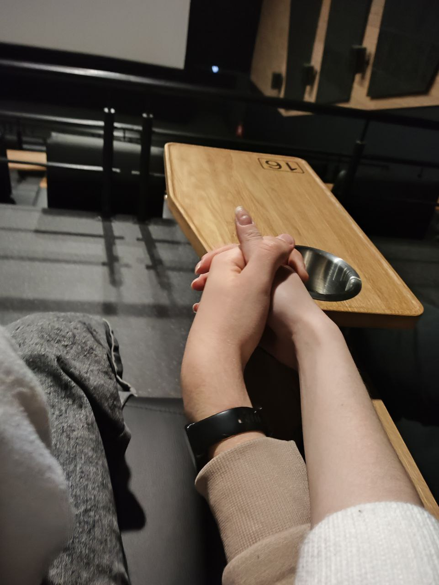
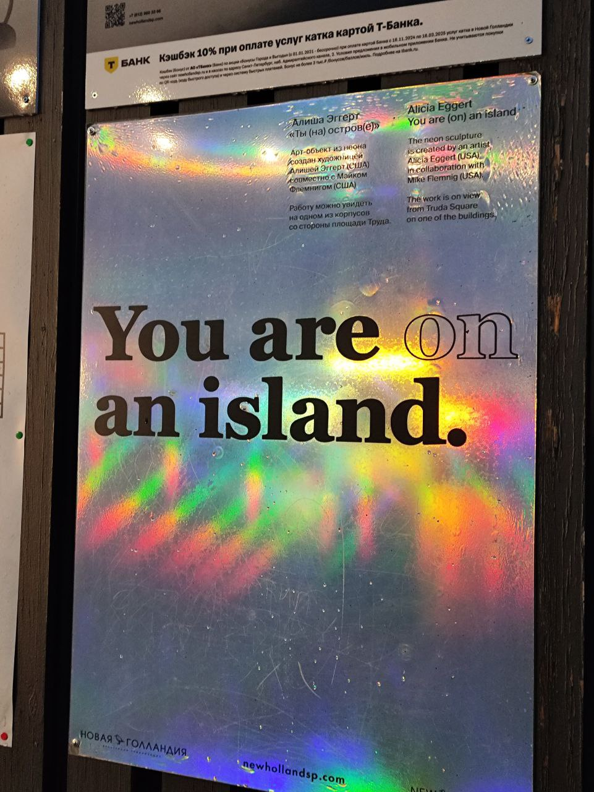

Привет, любимая Полина! Это небольшая карта, как прошли эти прекрасные три
месяца наших отношений!
Вместе уже: 0 дней, 0 часов, 0 минут и 0 секунд
21 октября
началось наше первое общение. Медосмотр, прогулочка в парке со мной и
Ромой, парк победы, поездка на невский. В этот день я начал понимать, что
ты мне очень нравишься, ведь я увидел в тебе искреннего и просто доброго
человека
23 октября
В этот день, мы погуляли на беговой, показала мне парк 300-летия. Так
прекрасно поговорили по-душам.Не могли найти друг друга на площади
"Маяковской"
 28 октября
28 октября
Спустя неделю общения, мы рассказали друг другу о своих чувствах. Не
передать ту радость, когда я узнал, что все взаимно, ведь на тот момент,
ты мне безумно нравилась. Так классно было, когда чмокнула на прощание!
 29 октября
29 октября
На следующий день мы впервые поцеловались, это было так классно, никогда
его не забуду.
 1 ноября
1 ноября
Ты улетела домой. Было очень-очень грустно без тебя, но ты меня очень
радовала, когда скидывала всякие приколюхи со своей галереи. Обожаю, когда
ты так делаешь.
 6 ноября
6 ноября
Мы сходили в кино на "Венома". Люблю ходить с тобой в кино, если честно.
Да и вообще, люблю с тобой везде ходить.
11 ноября
Впервые с фотиком сходили погулять. Учила меня фотографировать. Иногда так
стыдно становилось, что у меня вообще не получается, но вроде парочку
классных фоток получилось!
 14 ноября
14 ноября
Сходили в ленту под дождем. Промокли блин до нитки, но зато весело было.
Обожаю ходить с тобой в ленту. Да и вообще по тц-шкам и тому подобное.

Еще мы на уточек смотрели, это так прикольно было. Правда, я зыбыл в какой
это день было, поэтому пусть будет тут.
 21 ноября
21 ноября
Собрались сходить на выставку какую-то. Так и не получилось, но зато
прикольно погуляли по новой голландии. Впервые сходили в киношку в
галерее. Такие фоточки рук милые.


5 декабря
Сходили в гранд макет. Было круто и нтересно, но блин не нашли ни Бийска,
не Шимана на макете. Что за фигня, могли бы и добавить, хорошие же города.
Надели парные кофточки. Обожаю ее. Когда надеваю, сразу вспоминаю о тебе и
какая ты у меня хорошая и заботливая.
А вот просто классная фотография. Безумно нравится, как ты обрабатываешь фото, у тебя настоящий талант.